IEEE/CAA JAS 2025JCR Q1 · IF 19.3
Semantic Discrepancy
Dissecting and Mitigating Semantic Discrepancy in Stable Diffusion for Image-to-Image Translation
Turning a photo into a painting, diffusion models invent things that were never there. One inversion step fixes it.
照片转油画时，模型会凭空“脑补”原图里没有的东西。一步反演就能修正。

Overview概览
When a text-to-image diffusion model is used for image-to-image translation — turning a photo into a painting, say — everything hinges on an initial noise that keeps the original image's information, and the common choice, SDEdit, simply adds random noise to the image. We find that this causes “semantic discrepancy”: the model misreads relations in the image and invents content that was never there, because the noise breaks the image's semantic integrity and makes U-Net upsampling link unrelated regions. We propose a training-free, plug-and-play fix for Stable Diffusion that exploits the determinism of DDIM inversion: a single inversion step of the reference image supplies accurate features and correlations, which replace the faulty ones in generation. Across translation tasks on COCO, ImageNet and ImageNet-R, it reduces semantic discrepancy and improves fidelity, outperforming PnP and similar methods with fewer priors while running 11.2× faster.
用文生图扩散模型做图像转换（比如把照片变成油画）时，关键是找到既保留原图信息、又便于转换的初始噪声，常用的 SDEdit 做法是直接给原图加随机噪声。我们发现这会引起“语义偏差”：模型误解原图中物体之间的关系，凭空生成原图里没有的内容；剖析 Stable Diffusion 的网络后，我们定位到原因是加噪破坏了图像的语义完整性，使 U-Net 上采样时在不相关的区域之间建立了错误关联。我们提出一种免训练、即插即用的方法，利用 DDIM 反演的确定性，只需对参考图做一步反演，就能得到正确的特征和关联，用来替换生成过程中的错误部分。在 COCO、ImageNet 和 ImageNet-R 的多种图像转换任务上，该方法有效缓解了语义偏差、提升了保真度，用更少的先验超过 PnP 等方法，速度快 11.2 倍。
Highlights要点
- The cause: added noise breaks the image's semantics, so U-Net upsampling links unrelated regions.定位病因：加噪破坏了图像的语义完整性，让 U-Net 上采样在不相关的区域之间建立错误关联。
- Training-free and plug-and-play: one DDIM inversion step of the reference image supplies the right features and correlations.免训练、即插即用：对参考图做一步 DDIM 反演，就能得到正确的特征和关联。
- Higher fidelity on COCO, ImageNet and ImageNet-R, and 11.2× faster than PnP and similar methods.在 COCO、ImageNet 和 ImageNet-R 上保真度更高，比 PnP 等方法快 11.2 倍。
Method方法

Citation引用
@article{yuan2025semantic,
title = {Dissecting and Mitigating Semantic Discrepancy in Stable Diffusion for Image-to-Image Translation},
author = {Yifan Yuan and Guanqun Yang and James Z. Wang and Hui Zhang and Hongming Shan and Feiyue Wang and Junping Zhang},
journal = {IEEE/CAA Journal of Automatica Sinica},
volume = {12},
number = {4},
pages = {705--718},
year = {2025},
doi = {10.1109/JAS.2024.124800}
}More featured work更多代表作

Concept BrittlenessAsked for an ink painting, why does an image generator paint grapes in black-and-white ink but always paint a cake in color? We found what makes the result depend on the object being drawn, and fix this “object-level concept brittleness” without any training.同样画一幅水墨画，为什么图像生成模型能把葡萄画成黑白水墨色，而却把蛋糕始终画成彩色的？我们找到了这种因为画的物体不同而产生差异的原因，无需训练即可修正这种“物体级的概念脆弱性”。 SurveyGraphAn AI that first maps how a research field evolved, then writes a fully cited survey along that map.让 AI 先画出一个领域的“方法—实体”知识图谱，再沿着它写出一篇有据可查的学术综述。
StateTrackLLMs still remember the rules you set; deep into a conversation they quietly stop following them. We found this collapse and measured it.大模型还记得你定下的规则，却在长对话里悄悄不再遵守。我们发现并量化了这种“状态崩塌”。
ReMCTSCode-writing agents try many programs in a search tree, and every failed branch teaches the others.写代码的智能体在一棵搜索树上多路尝试，失败分支的经验会分享给其他分支，少走弯路。